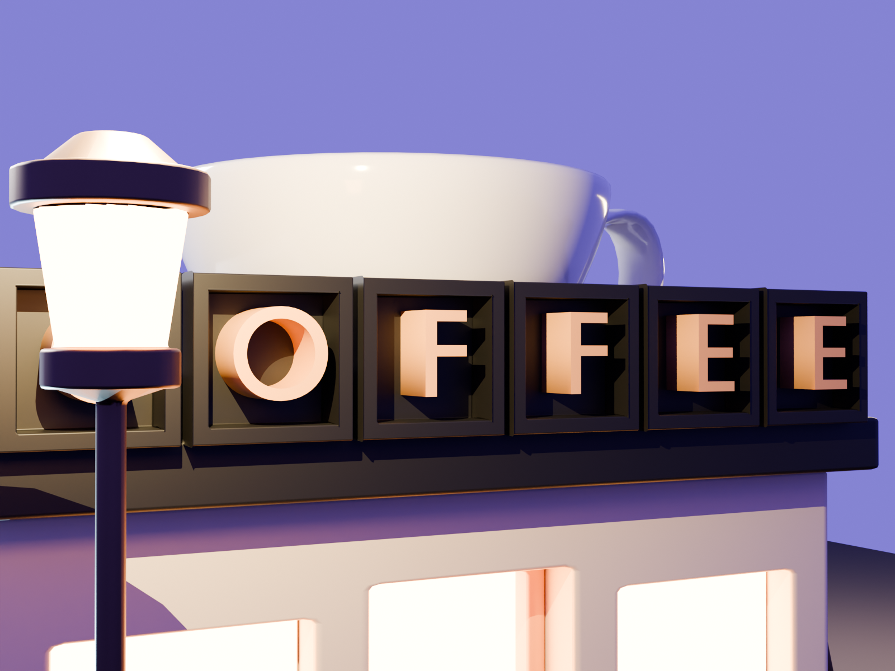
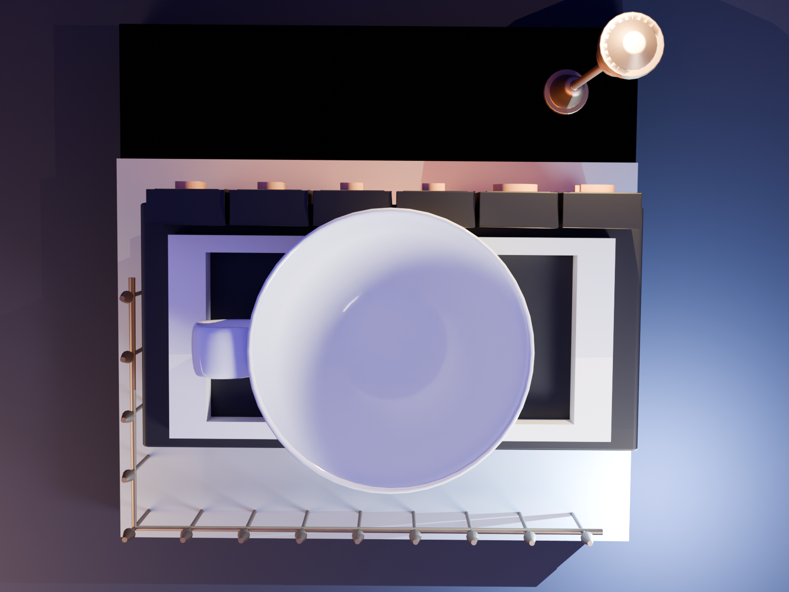
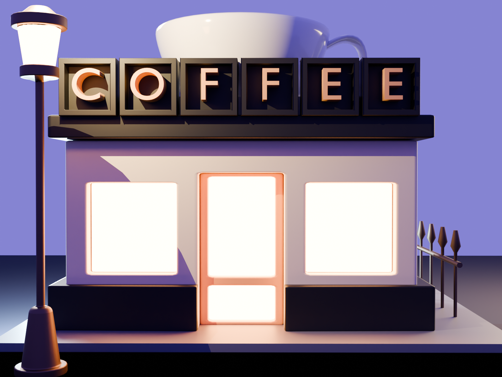

Coffee Shop
Hard Surface / Interior

This cozy coffee shop interior showcases a blend of modern design and rustic charm. The scene features carefully crafted details including exposed brick walls, pendant lighting, and custom-designed furniture. The warm, inviting atmosphere is enhanced by subtle ambient lighting and thoughtfully placed decor elements.
Every element in the scene has been meticulously modeled to create an authentic coffee shop experience, from the industrial-style coffee machine to the artisanal pastry display. The neutral color palette and material choices emphasize the contemporary yet comfortable aesthetic of the space.


